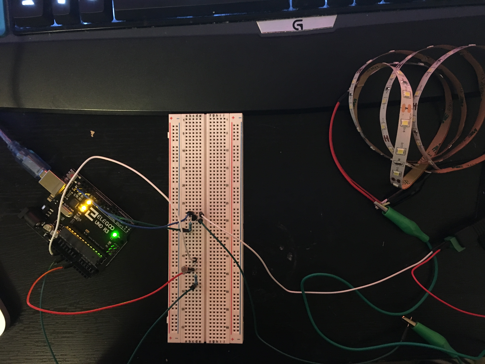
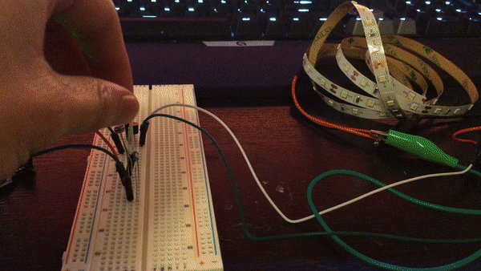

Garrett's Assignment 4 - Voltages!
Circuit
Schematic

Calculations
From 5.0V / .02a = 250 ohms, (assuming 20mA flowing) I used the 10k ohm resistor for the photoresistor. For the transitor, I chose the 10K resistor, because the transitor can handle up to 0.6A. Therefore, 10K resistor results in 0.0005 amp current.
Firmware
// Analog input mapped to n A0
const int analogInPin = A0;
// Transistor mapped to pin 9
const int analogOutPin = 10;
// The analog reading from the ldr sensor
int sensorValue;
// The output value from mapping function and sensorValue
int outputValue;
void setup() {
// Initialize serial communications at 9600 bps:
Serial.begin(9600);
}
void loop() {
// Read the value from the analogInPin, A0
sensorValue = analogRead(analogInPin);
// Map output 0-1023 to 0-255 to the range analogWrite uses
outputValue = map(sensorValue, 0, 1023, 0, 255);
// if sensor value is less than 250, turn LED's on
if (sensorValue < 80) {
// Set value of LED's to brightness equal to output value
analogWrite(analogOutPin, outputValue);
// Print LED ON statement to serial monitor
Serial.println("LED's are ON!");
// Print outputValue to serial monitor
Serial.println(outputValue);
}
// if sensor value is not less than 250, turn LED's off
else {
// Set value of LED's to zero, to turn off
analogWrite(analogOutPin, 0);
// Print LED OFF statement to serial monitor
Serial.println("LED's are OFF!");
// Print outputValue to serial monitor
Serial.println(outputValue);
}
// Wait 100 milliseconds before the next loop for analog
// converter to settle after the last reading:
delay(100);
}
Operating Circuit
Here is an animated GIF of everything in action! It turns on the strip LED when the photoresistor is covered and turns the LED off when not covered.
